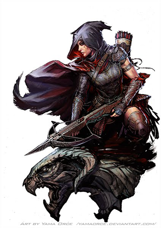

Life is an endless adventure for those who live by their wits. Ever just one step ahead of danger, rogues bank on Life is an endless adventure for those who live by their wits. Ever just one step ahead of danger, rogues bank on their cunning, skill, and charm to bend fate to their favor. Never knowing what to expect, they prepare for everything, becoming masters of a wide variety of skills, training themselves to be adept manipulators, agile acrobats, shadowy stalkers, or masters of any of dozens of other professions or talents. Thieves and gamblers, fast talkers and diplomats, bandits and bounty hunters, and explorers and investigators all might be considered rogues, as well as countless other professions that rely upon wits, prowess, or luck. Although many rogues favor cities and the innumerable opportunities of civilization, some embrace lives on the road, journeying far, meeting exotic people, and facing fantastic danger in pursuit of equally fantastic riches. In the end, any who desire to shape their fates and live life on their own terms might come to be called rogues.
Role: Rogues excel at moving about unseen and catching foes unaware, and tend to avoid head-to-head combat. Their varied skills and abilities allow them to be highly versatile, with great variations in expertise existing between different rogues. Most, however, excel in overcoming hindrances of all types, from unlocking doors and disarming traps to outwitting magical hazards and conning dull-witted opponents.
Alignment: Any
Hit Die: d8.
Starting Wealth: 4d6 × 10 gp (average 140 gp.) In addition, each character begins play with an outfit worth 10 gp or less.
Class Skills The rogue’s class skills are Acrobatics (Dex), Appraise (Int), Bluff (Cha), Climb (Str), Craft (Int), Diplomacy (Cha), Disable Device (Dex), Disguise (Cha), Escape Artist (Dex), Intimidate (Cha), Knowledge (dungeoneering) (Int), Knowledge (local) (Int), Linguistics (Int), Perception (Wis), Perform (Cha), Profession (Wis), Sense Motive (Wis), Sleight of Hand (Dex), Stealth (Dex), Swim (Str), and Use Magic Device (Cha).
Skill Ranks per Level: 8 + Int modifier.